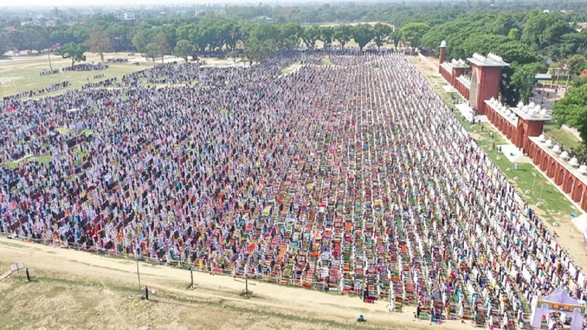
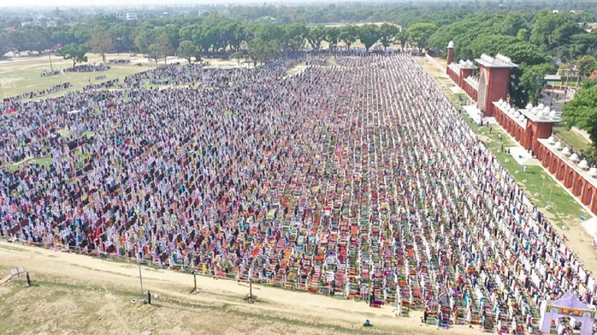

My Traveling Blog
Visited: Dinajpur City
How to get there
Since the location is situated in the heart of Dinajpur city, it is very easy to reach from any area.
The place is located at the center of Dinajpur, so transportation is easily available from all parts of the city.
This place is located in the central area of Dinajpur, so you can easily come here from any part of the city.
What kinds of food are available at that place?
A variety of food items are available at that place. Different kinds of local foods can be found there. Traditional Bangladeshi dishes are very popular there. Many people enjoy street food from that place. Fast food items are also available there. Snacks and full meals can be easily found. The food is fresh and tasty. Both young people and adults like the food there. The place is crowded because of its food variety. Many small food shops are located there. The prices of the food are reasonable. People from different areas come to eat there. The food environment is clean and pleasant. Visitors can enjoy different flavors of food. Overall, it is a great place for food lovers.
when to visited
The best time to visit this place is in the afternoon or evening. During this time, the place becomes lively and crowded. Most of the food shops remain open in the evening. People usually come here after finishing their daily work. The atmosphere is enjoyable at that time. The weather also feels more comfortable in the evening. Visitors can enjoy fresh and hot food. Families and friends often visit together. The place looks more attractive at night. However, it can be visited at any time of the day.
About More Information
The place is located in the heart of Dinajpur city, making it very easy to reach from most areas. A variety of food items are available there, including traditional Bangladeshi dishes and popular fast foods. Many small shops and street food stalls serve snacks, full meals, and beverages. The food is fresh, tasty, and affordable, attracting people from different parts of the city. Families, friends, and tourists often visit together. The atmosphere is lively and enjoyable, especially in the evening. The best time to visit is in the afternoon or evening when most shops are open and the environment is energetic. However, it can be visited at any time of the day according to convenience. People like this place because of its variety of food, easy accessibility, and reasonable prices. Cleanliness and proper seating arrangements make it comfortable for visitors. Some shops also offer special seasonal foods or local delicacies. The area is well-connected by local transport. Parking is available nearby, which makes visiting easier for people with vehicles. Overall, it is a popular spot in Dinajpur for enjoying delicious food, socializing, and experiencing local flavors.
More pictures of this place


 
